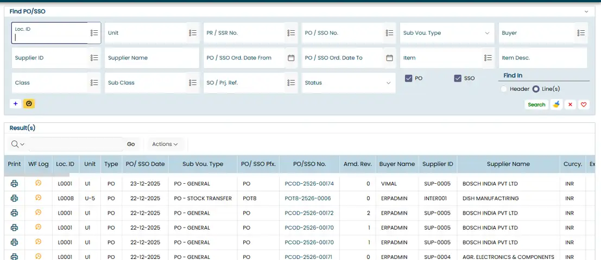
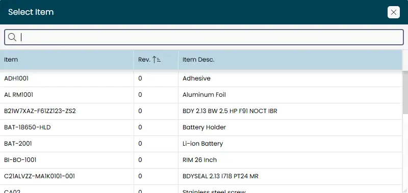

<div data-category="Operating Instructions" data-title="How to use LOV" data-updated="December 01, 2025" data-contributors="RoadmapIT" data-breadcrumb="Home,Operating Instructions,How to use LOV">
  <div class="page-content">
    <p>This screen explains the steps required to use the List of Values (LOV) to select data within the application.</p>
    <!-- Use LOV -->
    <h2>Step 1:</h2>
    <ul style="list-style-type: none; align-content: center">
      <li class="mouse-icon">
        Click on the LOV
        <i class="bi bi-list-ul fs-5 mx-2 text-dark"></i>
        icon to open the selection window.
      </li>
      <li class="mouse-icon">The popup window will disappear and the chosen data will appear in the text field.</li>
    </ul>
    
    
    <h2>Step 2:</h2>
    <ul style="list-style-type: none; align-content: center">
      <li class="mouse-icon">Type the search criteria in the text field.</li>
      <li class="mouse-icon">Values matching the entered text will be displayed.</li>
    </ul>
    <h2>Step 3:</h2>
    <ul style="list-style-type: none; align-content: center">
      <li class="mouse-icon">When the required data is found, choose the value.</li>
    </ul>
  </div>
</div>
